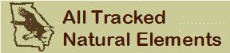
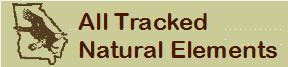
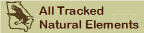
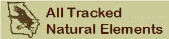

All Tracked Natural Elements
With or Without Protection Status

 



 NS Explorer Report: None NS Explorer Report: None
NS Explorer Report: None NS Explorer Report: None Exported from Biotics conservation database on June 16, 2017